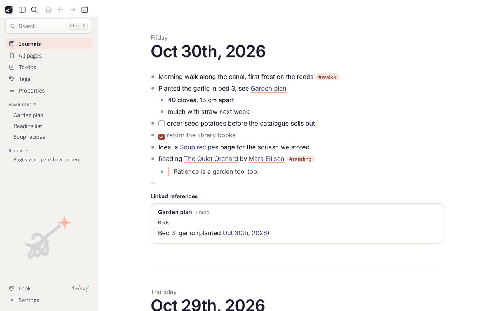
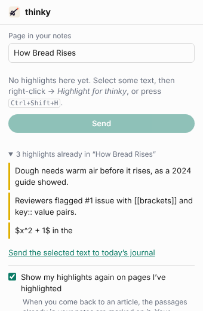
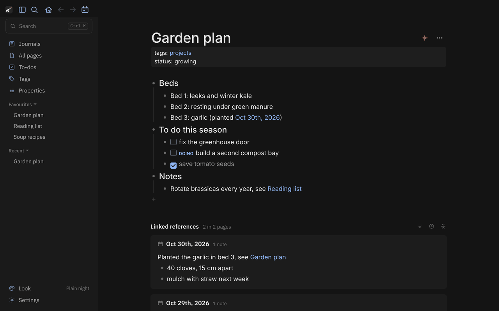

thinky
Try itA small, fast outliner for your notes, on Windows and Android.
Why I made it
I was an avid Logseq user. When Logseq decided to move away from Markdown files, I built my own, so I could keep working the way I loved and add the features I wanted along the way. thinky is inspired by Logseq and Obsidian: every note is a plain Markdown file in a folder you own.
thinky opens a folder of Logseq-style Markdown notes and lets you write in it: daily journals, pages,
[[links]],#tags, properties, to-dos and the notes that link back to each page. It starts in a moment, stays small, and works on the same plain files Logseq uses, so you can switch back and forth.Your notes stay plain Markdown files on your own devices. thinky has no accounts, no servers and no tracking. To use the same notes on your laptop and phone, keep the folder in a sync app you already use, such as Google Drive or Syncthing.
Try it or get it
- Open the demo in your browser
An online demo with a few sample pages, nothing to install. Write, link pages and tick off to-dos to see how it feels. What you write stays in your browser.
-
Always the newest release. Also: a portable Windows program that needs no installing, and every release. The online demo leaves out the AI features and backups; they need the app.

Today's journal on a laptop, in the thinky look. The notes are made up. Get started
Start a new notes folder
Notes
pages a file per page
journals a file per day
2026_11_02.md
logseq settings, backups
assets pictures, files
On first start, choose Create a new notes folder. thinky suggests a folder called "Notes" in your Documents (rename it or pick another place) and sets it up as shown. The Journals view starts on today's page, so you can just start writing.
With Add the short tour (4 pages) ticked, it also adds four short pages, starting with Start here, that explain writing, links, the journal, to-dos and search on a computer and a phone. Delete them whenever you like.
Use it with your Logseq notes
Logseq
your notes folder
thinky
Choose the folder that holds
pages,journalsandlogseq/config.edn. Nothing is imported or converted: Logseq and thinky can use the same folder, even at the same time. When both change a page, thinky merges the two and never silently overwrites.Your settings carry over. It reads that folder's
config.edn: where journals and pages live, the date and file name formats, favourites, the to-do workflow, quick-capture templates and shortcuts.Logseq's own Markdown. Bullets,
key:: valueproperties,[[links]],#tags, block references, TODO/DONE, scheduled and deadline dates. Lines you didn't touch are written back exactly as they were, so Logseq opens every file thinky saves.For Logseq's Markdown folders (Logseq 0.10 and its file-based graphs). Org-mode files, whiteboards and Logseq's newer database version aren't supported.
What it does
Journals and pages
Links, tags, properties, linked and unlinked references, and fast search that forgives typos in page names.
Safe with sync
If a page changed on another device while you were writing, thinky merges the two, or shows both side by side. Nothing is silently overwritten, and each page's history lets you go back.
Quick capture
Get a thought down without opening the app.
Windows: a shortcut key you choose opens a small box at once. Android: home-screen widgets, a Quick Settings tile and the share sheet. 
Edge or Chrome: the extension sends highlights (how). Optional AI
Tidy a note (Polish note), read a picture's words, ask about a page, or suggest links. Off until you choose a service in Settings › AI (what is sent):
ClaudeOpenAIGeminiOpenRouterOllama, offline
Backups
On the laptop, only when something changed: dated zips of the notes folder, or a git repository such as GitHub.
Feels like Logseq
The same files, folders and settings, block references, templates, to-do states, tabs, two pages side by side, and many looks, light and dark.
Lean
About 3 MB to install on Windows, with no framework. Nothing runs in the background, except a tiny helper if you choose a shortcut key.

A page in the Plain night look. 
On a phone. Installing
Windows: run the installer. Windows may show "Windows protected your PC", because the program isn't signed with a paid certificate; choose More info, then Run anyway (see the code signing policy). After that, thinky updates itself from Settings › About, and checks each update's signature before installing it.
Android: open the downloaded file and allow your browser to install apps when Android asks. thinky needs "access to all files" to read your notes folder. Later versions update from Settings › About.
Uninstalling: on Windows, Settings › Apps › Installed apps › thinky › Uninstall; on Android, like any app. Your notes folder is never touched.
Open source
thinky is free software under the GNU Affero General Public License, version 3. The code, the history of how it was built and the issue tracker are on GitHub: github.com/srikanth-iyer/thinky.
Found a problem or have an idea? Open an issue, or use Settings › Help › Send feedback in the app.